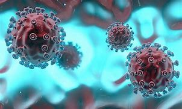

新 冠 病 毒

病毒特征
根据现有病例资料，新型冠状病毒肺炎以发热、干咳、乏力等为主要表现，少数患者伴有鼻塞、流涕、腹泻等上呼吸道和消化道症状。重症病例多在1周后出现呼吸困难，严重者快速进展为急性呼吸窘迫综合征、脓毒症休克、难以纠正的代谢性酸中毒和出凝血功能障碍及多器官功能衰竭等。值得注意的是重症、危重症患者病程中可为中低热，甚至无明显发热。轻型患者仅表现为低热、轻微乏力等，无肺炎表现。从目前收治的病例情况看，多数患者愈后良好，少数患者病情危重。老年人和有慢性基础疾病者愈后较差。儿童病例症状相对较轻。 [10]
流行特征
世卫组织总干事谭德塞2020年3月11日说，新冠肺炎疫情已具有大流行特征。
谭德塞在日内瓦举行的例行记者会上说，疫情的传播程度和严重性令人深感担忧，“因此我们评估认为新冠肺炎疫情已具有大流行特征”。
他说：“我们以前从未见过冠状病毒引发的大流行。我们以前也从未见过得到控制的大流行。”
他强调，将新冠肺炎疫情描述为“大流行”不会改变世卫组织对其威胁的评估，“它不会改变世卫组织正在做的事情，也不会改变各国应该做的事情”。
新型冠状病毒肺炎，正处在早期快速变化阶段。中国已公布导致新型冠状病毒肺炎的新型冠状病毒的全基因组序列，这将有助于全球科学家和公共卫生组织加入诊断试剂的研发，及病毒致病性研究。
国家卫健委已发布1号公告，将新型冠状病毒感染的肺炎纳入传染病防治法规定的乙类传染病，但采取甲类传染病的预防、控制措施，同时将其纳入检疫传染病管理。 [13-14]
冠状病毒渲染图（来源：Alamy）
世卫组织新冠肺炎情况报告
202
0年2月28日，世卫组织新冠肺炎情况每日报告，地区及全球风险级别均提升为最高级别“非常高”，与中国一致，此前地区及全球风险级别为“高”。
当地时间2020年3月11日，世界卫生组织总干事谭德塞宣布，根据评估，世卫组织认为当前新冠肺炎疫情可被称为全球大流行（pandemic）。 [6]
传播途径 播报
据央视新闻消息，上海疫情防控工作发布会介绍：卫生防疫专家强调，可以确定的新冠肺炎传播途径主要为直接传播、气溶胶传播和接触传播。直接传播是指患者喷嚏、咳嗽、说话的飞沫，呼出的气体近距离直接吸入导致的感染；气溶胶传播是指飞沫混合在空气中，形成气溶胶，吸入后导致感染；接触传播是指飞沫沉积在物品表面，接触污染手后，再接触口腔、鼻腔、眼睛等粘膜，导致感染。 [11]
2021年6月14日，加拿大科研人员在英国《自然·通讯》杂志上发表论文，发现新型冠状病毒可感染北美鹿鼠并在鼠间传播。 [45]
当地时间2021年12月1日，加拿大环境与气候变化部发布新闻通报宣布，首次发现境内的野生动物感染了新冠病毒。 [53]
2022年5月4日，美国健康生活新闻网发表报道称，密歇根大学研究发现，空气传播新冠病毒的可能性是接触物体表面传播的1000倍。密歇根大学的研究人员在大学校园内对空气和表面样本进行了检测，发现吸入病毒颗粒的概率大于手指接触感染的概率。 [98]
临床与治疗 播报
临床表现
新型冠状病毒感染的肺炎患者的临床表现为：以发热、乏力、干咳为主要表现，鼻塞、流涕等上呼吸道症状少见，会出现缺氧低氧状态 [15] 。约半数患者多在一周后出现呼吸困难，严重者快速进展为急性呼吸窘迫综合征、脓毒症休克、难以纠正的代谢性酸中毒和出凝血功能障碍。值得注意的是，重症、危重症患者病程中可为中低热，甚至无明显发热。部分患者起病症状轻微，可无发热，多在1周后恢复。多数患者愈后良好，少数患者病情危重，甚至死亡。 [16]
重庆疫情